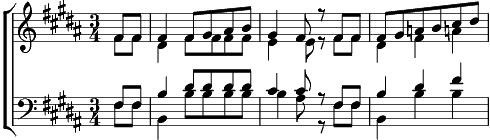

Refrain:
Redis-moi, mon ami mon frère,
La chanson de naguère
Redis-mois, mon frère mon ami
La tendre chanson de jadis
La chanson de jadis
1. Nous portions nos vingt ans
Dans un pays tranquille
Nous allons par la ville
Qui ressemblait aux champs
On croyait à l'amour
Comme au fruit de la vigne
On pêchait à la ligne
Dans l'eau calme des jours
Refrain
2. Nous avions dans nos mains
Le métier de nos pères
Et le goût de la terre
Avait le goût du pain
Nous allions sur les quais
Courtiser la fortune
Sans penser que la Lune
Nous verrais débarquer
Coda:
Souviens-moi, mon ami mon frère,
La chanson de naguère
Redis-mois, mon frère mon ami
La tendre chanson de jadis
Nous en ferons si le coeur t'en dit
La belle chanson d'aujourd'hui.